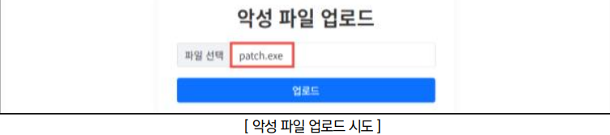
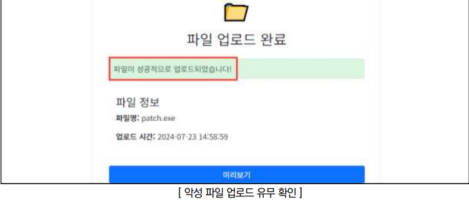
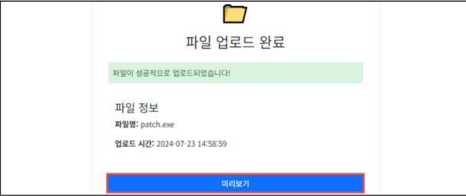
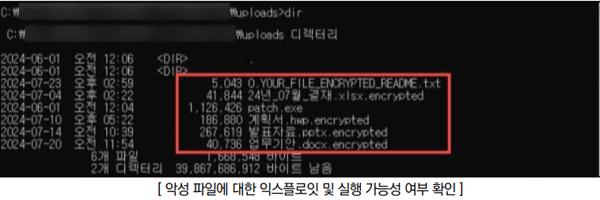
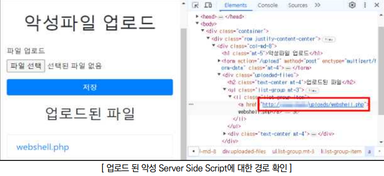
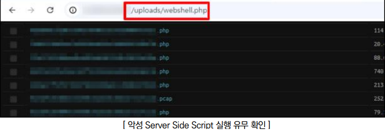

점검목적
- 웹 애플리케이션 내 업로드 기능 이용 시 악성 파일의 업로드 및 실행 가능 여부 점검
- 업로드되는 파일의 확장자에 대한 적절성을 검증하는 로직을 구현하여 악성 파일(Server Side Script, exe, dll, bat 등)의 업로드를 방지하고, 서버에 저장된 파일 경로를 유추하여 해당 파일의 실행을 제한하기 위함
참고
※ Server Side Script: 웹에서 사용되는 스크립트 언어 중 서버 측에서 실행되는 스크립트
※ 악성 콘텐츠: Flash 파일이나 dll, bat, exe 실행 파일 등 악성코드가 포함될 수 있는 콘텐츠
※ 기반시설 특성상 원칙적으로 업로드 기능을 제한해야 하나, 부득이하게 사용해야 하는 경우 특정 사용자만 허용된 확장자의 콘텐츠 파일을 업로드할 수 있도록 구현
※ 소스코드 및 취약점 점검 필요
판단 기준
양호 : 업로드되는 파일에 대한 확장자 검증이 이루어지는 경우
취약 : 업로드되는 파일에 대한 확장자 검증이 이루어지지 않고 업로드 경로 접근 시 정상적으로 실행이 가능한 경우
조치 방법
- 업로드되는 파일에 대한 확장자 검증 및 실행 권한 제거
악성 콘텐츠 업로드
점검 방법
Step 1) 파일 업로드 기능 이용 시 파일 확장자(.exe, .bat, .sh, .dll 등) 검증 여부 확인

Step 2) 임의 악성 파일에 대하여 정상적으로 업로드 가능 여부 확인

Step 3) 파일 다운로드 및 특정 서비스 간 실행 기능 제공 시 클라이언트/서버에 대하여 악성 코드 감염 가능성 여부 확인
 
Server Side Script 업로드
점검 방법
Step 1) Server Side Script 파일 업로드 및 파일 경로 확인

Step 2) 업로드된 Server Side Script 파일 경로 접근 시 파일 실행 여부 확인

조치 방법
1. 업로드 파일명에 인코딩/디코딩, 널바이트, 태그 등을 제거할 수 있도록 정규화 및 필터링
2. 업로드 파일의 확장자 및 MIME 타입에 대해 화이트리스트 방식으로 검증 로직을 구현하여 서버 사이드로 하여금 허용된 파일 유형만 업로드를 허용하며 대용량 파일 업로드 시 용량 제한 구현
3. 업로드된 파일의 이름을 암호화 후 저장하여 파일 이름을 유추할 수 없도록 처리
4. 업로드된 파일의 실행 권한을 제한하여 해당 파일이 서버 사이드에서 실행되지 않도록 설정
5. 업로드 경로에 대하여 웹 디렉터리와 격리 조치
6. 주기적으로 업로드된 파일을 대상으로 바이러스 검사 실시